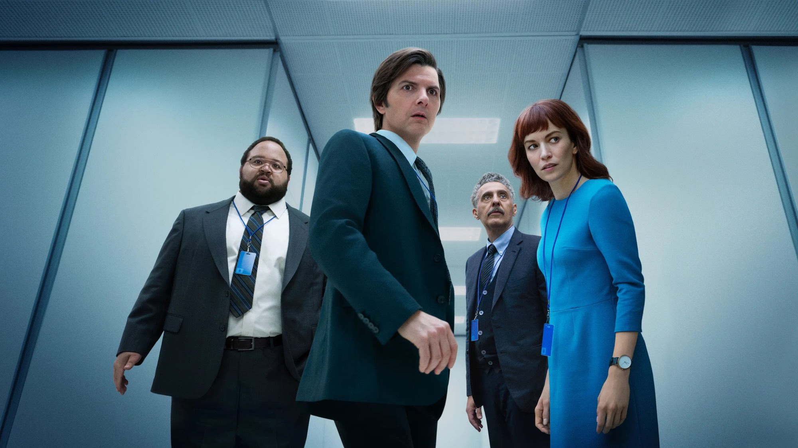
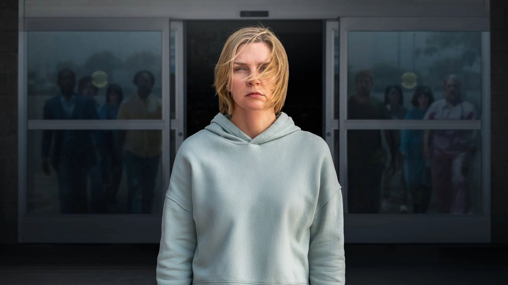
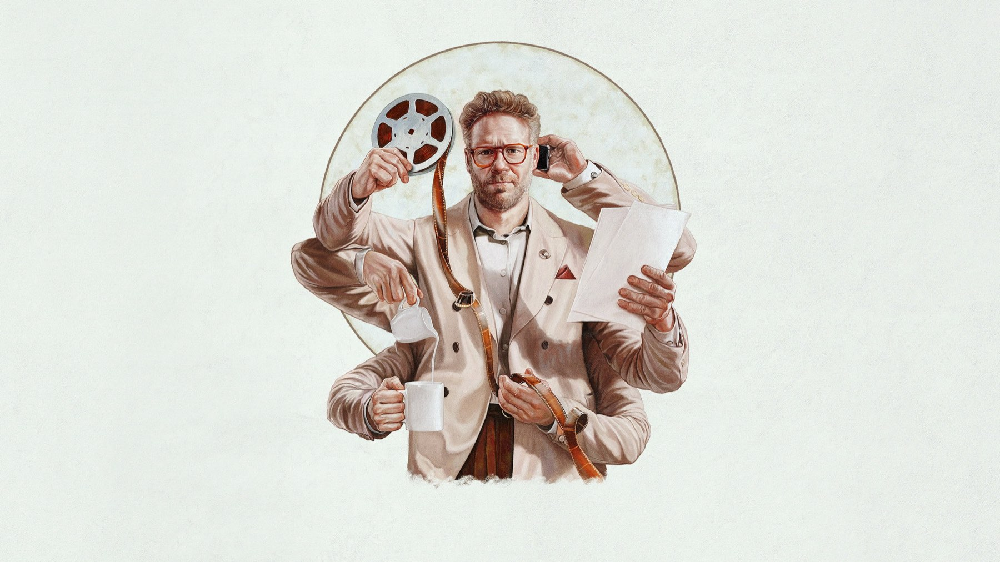

Le migliori serie Apple TV da vedere adesso
Da Scissione a Pluribus, passando per Slow Horses e The Studio: sei serie, una per umore, e dove si trovano oggi
Apple TV non ha il catalogo più grande, ma ha la media più alta: poche serie, quasi tutte curate fino all'ultimo dettaglio. Per questo la scelta è più difficile di quanto sembri. Abbiamo selezionato sei titoli con un criterio preciso: serie complete o in corso che si possono iniziare da capo, con un'identità riconoscibile e con un motivo concreto per partire proprio ora, che sia una stagione in uscita, un record agli Emmy o un finale in arrivo.
Le abbiamo ordinate dalla più ambiziosa alla più leggera, così potete scegliere in base all'umore. Dove vederle: tutte sono incluse nell'abbonamento ad Apple TV, che in Italia si può attivare anche come canale su Prime Video. I cataloghi cambiano, quindi i dati su stagioni e uscite sono aggiornati a ottobre 2026.
Scissione (Severance)
Dipendenti che hanno separato chirurgicamente la memoria del lavoro da quella della vita privata: la premessa creata da Dan Erickson è diventata, dal debutto nel febbraio 2022, la serie di prestigio della piattaforma. Ben Stiller ne è produttore esecutivo e regista principale, e si sente: i corridoi bianco-azzurri della Lumon sono una delle messe in scena più riconoscibili della televisione recente. La seconda stagione, uscita tra gennaio e marzo 2025, ha ottenuto 27 candidature agli Emmy e otto statuette, tra cui quelle per Britt Lower e Tramell Tillman. La terza stagione è stata annunciata subito dopo il finale della seconda, ma al momento non ha ancora una data di uscita.
Perché partire da qui: è la serie che spiega meglio che cosa sa fare Apple TV, cioè un'idea forte portata avanti con rigore, senza spiegare tutto. Chi ama il mistero a lenta combustione la divorerà; chi vuole risposte rapide dovrà avere pazienza.
Dove vederla: in abbonamento su Apple TV.
Pluribus

Vince Gilligan, il creatore di Breaking Bad e Better Call Saul, è tornato con un'idea di fantascienza quasi paradossale: e se un virus alieno trasformasse l'umanità in una mente collettiva, felice e gentile? Carol (Rhea Seehorn) è una delle tredici persone immuni e l'unica cosa che vuole è rimanere sé stessa. La prima stagione, nove episodi, è arrivata nel novembre 2025 e secondo Apple è diventata la serie più vista nella storia della piattaforma, davanti a Severance e Ted Lasso. Una seconda stagione è stata ordinata.
Perché guardarla adesso: è il modo più semplice per recuperare il titolo di cui si parla di più, con tempo per finirlo prima della prossima stagione. Il suo punto di forza, a nostro avviso, è il tono: un incubo raccontato con una calma quasi comica, molto lontano dai soliti apocalittici.
Dove vederla: in abbonamento su Apple TV.
Slow Horses
Gary Oldman è Jackson Lamb, il capo sgradevole e sorprendentemente brillante di Slough House, la discarica dell'MI5 dove finiscono gli agenti caduti in disgrazia. La serie, dall'aprile 2022, adatta i romanzi di Mick Herron e unisce spionaggio e umorismo nero senza rinunciare né all'uno né all'altro. Ha ottenuto candidature agli Emmy come miglior serie drammatica e miglior attore protagonista, e uno dei suoi sceneggiatori, Will Smith, ha vinto l'Emmy per la scrittura.
Perché adesso: la sesta stagione è in onda, con un episodio a settimana dal 16 settembre al 21 ottobre 2026, ed è già confermato il seguito: la settima stagione sarà tratta da Bad Actors e l'ottava da Clown Town. È la serie giusta per chi cerca una storia chiusa in sei puntate, senza prove di resistenza.
Dove vederla: in abbonamento su Apple TV.
The Studio

Seth Rogen è il nuovo capo di uno studio cinematografico, costretto a conciliare il cinema che ama con i conti da far tornare. La commedia, creata da Rogen con Evan Goldberg, Peter Huyck, Alex Gregory e Frida Perez, è partita nel marzo 2025 con un episodio famoso, The Oner, costruito su lunghi piani sequenza: un omaggio a chi il cinema lo ama davvero. Tra le comparsate ci sono Martin Scorsese, Ron Howard e Charlize Theron.
I numeri parlano da soli: agli Emmy 2025 ha ottenuto 23 candidature, ha vinto come miglior serie comica e ha chiuso con 13 premi, record per una commedia in una sola stagione, davanti agli 11 di The Bear. La seconda stagione, con riprese iniziate nel gennaio 2026, è in lavorazione. Per chi ama il cinema e sa ridere di sé stesso, è un obbligo.
Dove vederla: in abbonamento su Apple TV.
Silo
Un rifugio sotterraneo con migliaia di abitanti, regole che nessuno può discutere e un'unica domanda proibita: com'è fuori? Graham Yost ha adattato la trilogia di Hugh Howey (Wool, Shift, Dust) per la televisione. Le prime due stagioni, debuttate a maggio 2023 e a novembre 2024, raccontano Wool; la terza, uscita a luglio 2026, passa a Shift. La quarta e ultima stagione, tratta da Dust, è prevista a luglio 2027: è la serie ideale per iniziare adesso, perché la storia ha un finale già deciso.
Se volete sapere come ci è sembrata la nuova stagione, abbiamo scritto la recensione di Silo 3.
Dove vederla: in abbonamento su Apple TV.
Shrinking
Il modo più dolce di chiudere la lista. Jimmy (Jason Segel) è un terapeuta che ha perso la moglie e decide di dire ai pazienti ciò che pensa davvero, senza filtri. La serie, creata da Segel con Brett Goldstein e Bill Lawrence dal gennaio 2023, ha tra i protagonisti Harrison Ford nei panni di un terapeuta anziano che convive con il Parkinson, un personaggio raccontato con ironia e rispetto. La terza stagione è andata in onda tra gennaio e aprile 2026 ed è già confermata una quarta: Lawrence ha detto che i tre archi originali si chiuderanno come previsto e che la nuova stagione avvierà una storia nuova con lo stesso cast.
Perché guardarla: perché fa ridere e commuovere con la stessa leggerezza, ed è la meno impegnativa della lista senza essere mai banale.
Dove vederla: in abbonamento su Apple TV.
Da dove cominciare
Una serie per ogni sera: il mistero con Scissione, la fantascienza con Pluribus, la risata con The Studio.
Se avete un solo weekend, partite da Pluribus o da Scissione: sono le due serie che meglio raccontano l'ambizione di Apple TV. Se invece cercate qualcosa di veloce da seguire in questo momento, Slow Horses ha ancora tre episodi in uscita, fino al 21 ottobre. E per una serata leggera, The Studio e Shrinking non deludono.
Sei serie, sei modi diversi di usare Apple TV: dal mistero filosofico di Scissione alla commedia di The Studio. Qual è la vostra preferita, e quale manca in lista? Scrivetecelo su Instagram.
Domande frequenti
Quale serie Apple TV conviene guardare per prima?
Per il mistero, Scissione; per la fantascienza, Pluribus; per ridere, The Studio. Slow Horses è la scelta giusta se volete seguire una serie mentre esce.
Fino a quando escono gli episodi della sesta stagione di Slow Horses?
Gli episodi della sesta stagione escono uno a settimana dal 16 settembre al 21 ottobre 2026.
Quando finisce Silo?
Silo si concluderà con la quarta stagione, prevista a luglio 2027 e tratta dal romanzo Dust.
Fonti consultate (13)
- Wikipedia – Severance (TV series)
- Wikipedia – Slow Horses
- Wikipedia – Pluribus (TV series)
- Wikipedia – The Studio (TV series)
- Wikipedia – Shrinking (TV series)
- Wikipedia – Silo (TV series)
- Wikipedia – 77th Primetime Emmy Awards
- TMDB – Severance
- TMDB – Slow Horses
- TMDB – Pluribus
- TMDB – The Studio
- TMDB – Silo
- TMDB – Shrinking